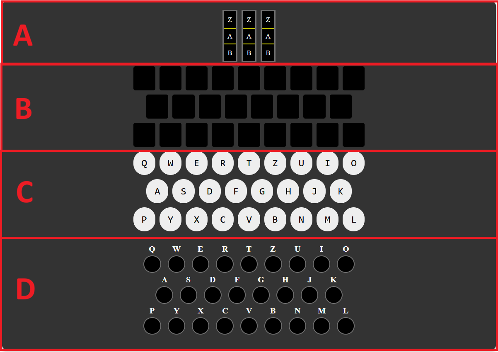
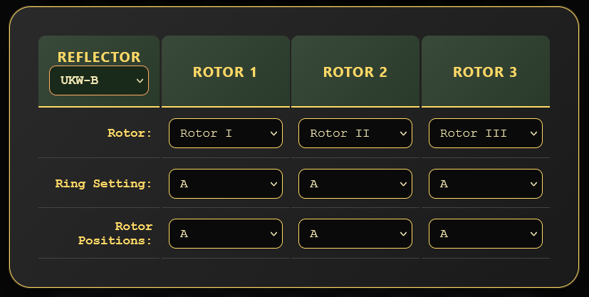
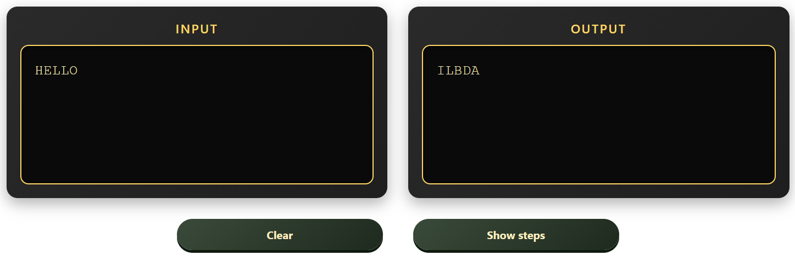
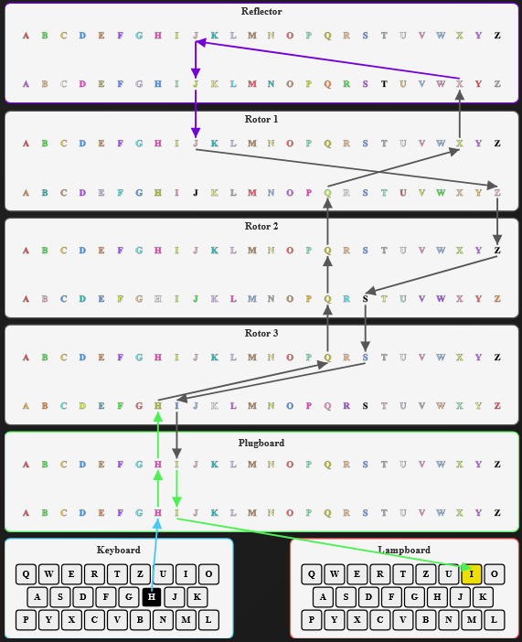
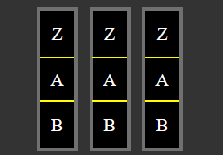
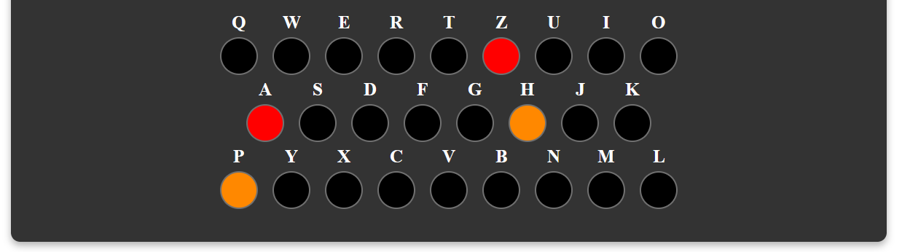
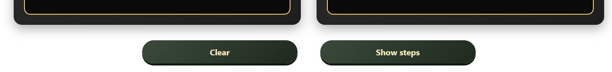
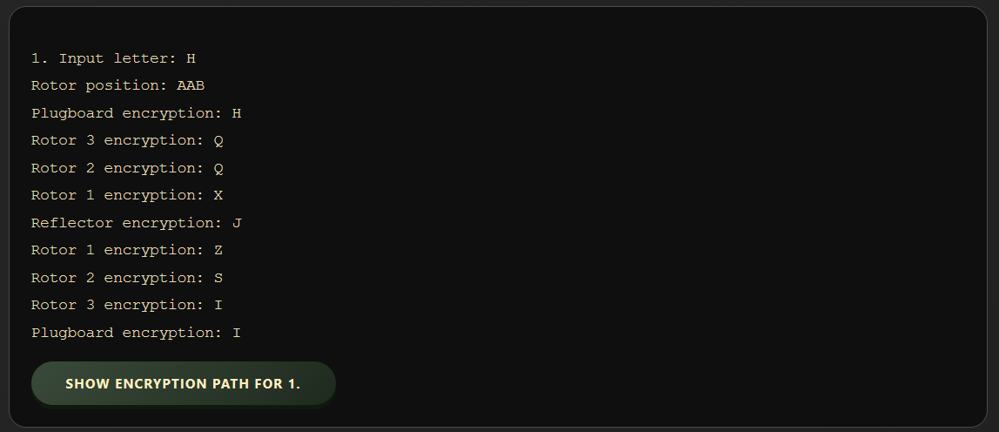

Enigma Simulator — user manual
1. Introduction
What is the Enigma Machine?
The Enigma machine was a cipher device used extensively by Germany during World War II to protect commercial, diplomatic, and military communication. Its security came from the complex, changing electrical pathway created by its mechanical components: a keyboard, a lampboard, rotors, a reflector, and a plugboard. Its most crucial property was that it was symmetrical: if you type a letter with the machine in a given configuration, a different letter lights up. If you then type that resulting letter with the exact same machine configuration, you get the original letter back. This made encryption and decryption the same process.
About This Simulator
This web-based simulator provides a fully functional, virtual Enigma machine. It allows you to replicate historical Enigma models, experiment with rotor wirings, understand inner workings, and encrypt/decrypt messages just like a WWII operator.
2. Getting Started
Accessing the Simulator
1. Install prerequisites using pip install -r requirement.txt
2. Run the python file using python3 server.py
Navigate to index.html in any browser. No account is required.
Interface Overview
The simulator is divided into four main sections:
- Enigma Machine Panel: A: rotors, B: lampboard, C: keyboard and D: plugboard.
- Configuration Panel: Rotor and reflector selection, ring settings, rotor positions.
- Message Input/Output: Text area for long messages and cipher output.
- Walkthrough of the encryption steps: A diagram showing the encryption process at each step.




3. Core Components
The Keyboard & Lampboard
Click keys on the website or type directly to input letters. Each key press lights a letter on the lampboard — that's your output character.
The Rotors
Each rotor is a disc with 26 scrambled contacts. You select rotor types (I, II, III, IV, V, etc.) and order (left, middle, right). The rotor windows show current position, which changes with every keystroke.
The Reflector
A static component at the end of the rotor stack. It redirects the signal back through the rotors, ensuring the machine is symmetric. Select reflector type (A, B or C).
The Plugboard
Allows swapping letter pairs before the signal enters the rotors. Click two letters to create a swap (e.g., A ↔ Z). Up to 13 pairs can be made.
4. How to Use the Simulator
Step 1: Setting Up Your Machine
Both communicating parties need identical settings. To do this, you need to click on any of the three rotors:

This will open up a configuration allowing you to set the following:
- Select Rotors: Choose types and order (left=rotor 1, middle=rotor 2, right=rotor 3).
- Set Ring Settings: Adjust ring letters for each rotor.
- Set Initial Positions: Rotor start letters shown in window.
- Select Reflector: Choose matching reflector type.
After setting the rotors, you can now set up the plugboard:
- Select first letter: select the first letter of the plugboard pair by clicking on the black button on the plugboard..
- Select second letter: select the letter to swap with the first letter by clicking on the black button on the plugboard.
Members of a pairing will share the same color and no other characters can have the same color. As shown in the image below,
A ↔ Z are colored red and P ↔ H are colored orange.

A ↔ Z, selecting
A first then Z yields the same result as selecting Z first then A.
Step 2: Encrypting / Decrypting a Message
Click keyboard keys or type directly; the lampboard shows each cipher letter and automatically writes the letter to the output area. Important: decryption works identically — set machine to the same starting configuration and input ciphertext to recover plaintext.
Step 3: Look at the state of the enigma machine at each encryption step
Click Show steps button. This will expand the section and give details on what happens:

Click Show encryption path for x. where x is the step you want to see.

This shows a diagram of the state of enigma machine at that step. Full rotor mappings are shown through distinct color pairings. For example, in the diagram, rotor 3's H and Q have the same color, so input from plugboard H will output Q from rotor 3.
5. Key Features Explained
Automatic Key Advance
Each keypress advances the rightmost rotor by one step. When a rotor completes a full turn, it triggers the rotor to its left. This creates the polyalphabetic cipher effect.
Ring Settings
Ring settings offset the rotor wiring relative to the alphabet ring. Part of the daily key, they influence turnover position.
Initial Rotor Positions
The starting letters visible in the rotor windows. In historical practice, the operator chose a random message key and transmitted it encrypted at the beginning.
Enigma Machine diagram for any given step
The diagram shows the state of the enigma machine, how the rotors are wiring, how encryption letter changes at each point, and explain why the machine is symmetric
6. Glossary of Terms
| Term | Definition |
|---|---|
| Ciphertext | The encrypted, unreadable output of the Enigma machine. |
| Enigma Key | Complete set of machine settings (rotor order, ring settings, initial positions, plugboard, reflector). |
| Grundstellung | Initial positions of the rotors shown in the rotor windows. |
| Plaintext | The original readable message before encryption. |
| Plugboard | Panel that swaps pairs of letters to increase security. |
| Reflector | Static component that directs signal back, making machine self-inverse. |
| Ring Setting | Offset of rotor's internal wiring relative to outer ring. |
| Rotor | Rotating disc with scrambled wiring providing primary encryption. |
| Turnover | The point at which a rotor advances the rotor to its left. |